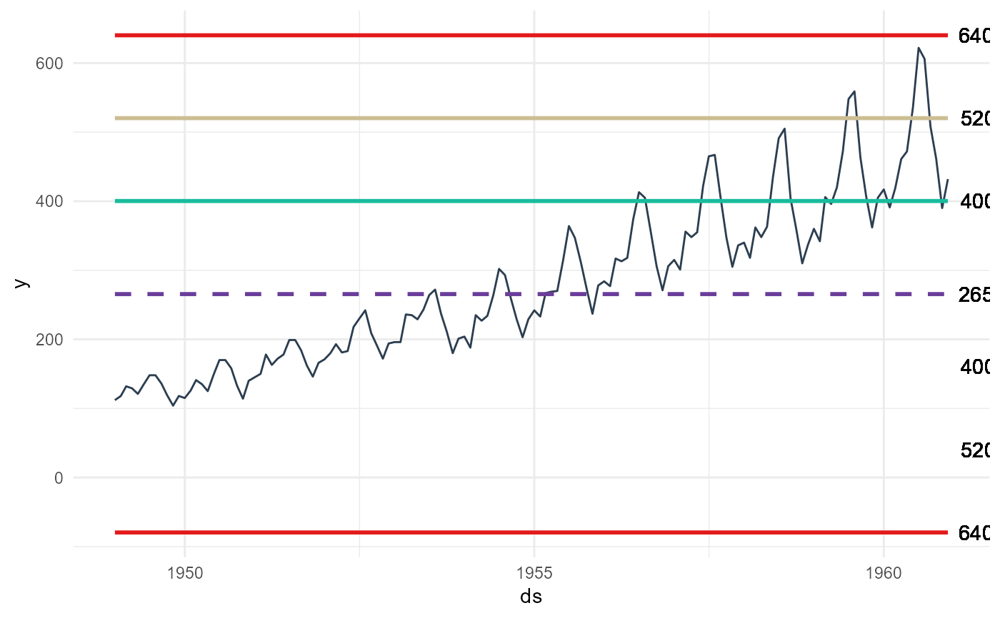

A control chart is a specific type of graph that shows data points between upper and lower limits over a period of time. You can use it to understand if the process is in control or not. These charts commonly have three types of lines such as upper and lower specification limits, upper and lower limits and planned value. By the help of these lines, Control Charts show the process behavior over time.
Usage
ts_qc_run_chart(
.data,
.date_col,
.value_col,
.interactive = FALSE,
.median = TRUE,
.cl = TRUE,
.mcl = TRUE,
.ucl = TRUE,
.lc = FALSE,
.lmcl = FALSE,
.llcl = FALSE
)Arguments
- .data
The data.frame/tibble to be passed.
- .date_col
The column holding the timestamp.
- .value_col
The column with the values to be analyzed.
- .interactive
Default is FALSE, TRUE for an interactive plotly plot.
- .median
Default is TRUE. This will show the median line of the data.
- .cl
This is the first upper control line
- .mcl
This is the second sigma control line positive
- .ucl
This is the third sigma control line positive
- .lc
This is the first negative control line
- .lmcl
This is the second sigma negative control line
- .llcl
This si the thrid sigma negative control line
Examples
library(dplyr)
data_tbl <- ts_to_tbl(AirPassengers) %>%
select(-index)
data_tbl %>%
ts_qc_run_chart(
.date_col = date_col
, .value_col = value
, .llcl = TRUE
)
#> Warning: All aesthetics have length 1, but the data has 144 rows.
#> ℹ Please consider using `annotate()` or provide this layer with data containing
#> a single row.
#> Warning: All aesthetics have length 1, but the data has 144 rows.
#> ℹ Please consider using `annotate()` or provide this layer with data containing
#> a single row.
#> Warning: All aesthetics have length 1, but the data has 144 rows.
#> ℹ Please consider using `annotate()` or provide this layer with data containing
#> a single row.
#> Warning: All aesthetics have length 1, but the data has 144 rows.
#> ℹ Please consider using `annotate()` or provide this layer with data containing
#> a single row.
#> Warning: All aesthetics have length 1, but the data has 144 rows.
#> ℹ Please consider using `annotate()` or provide this layer with data containing
#> a single row.
#> Warning: All aesthetics have length 1, but the data has 144 rows.
#> ℹ Please consider using `annotate()` or provide this layer with data containing
#> a single row.
#> Warning: All aesthetics have length 1, but the data has 144 rows.
#> ℹ Please consider using `annotate()` or provide this layer with data containing
#> a single row.
